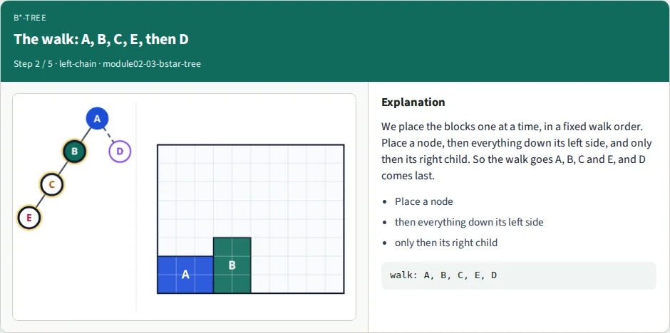
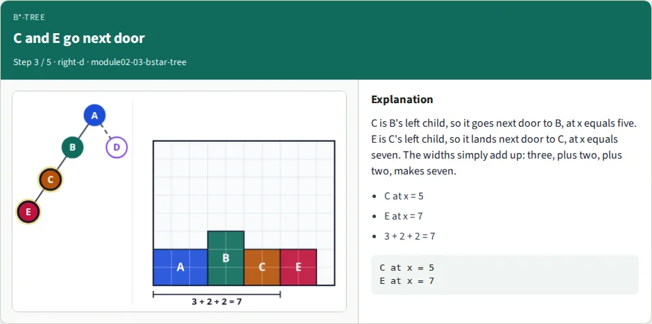
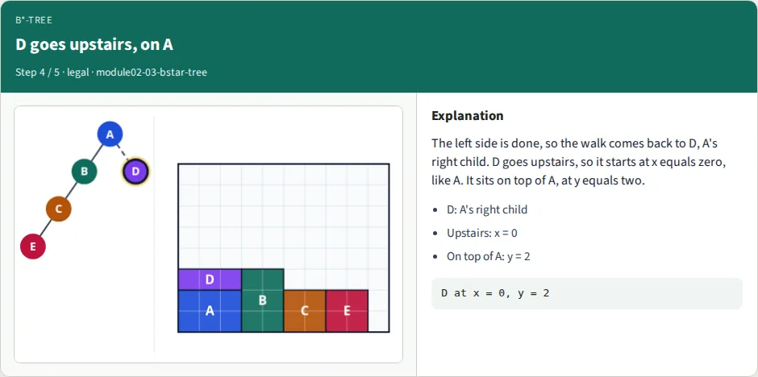
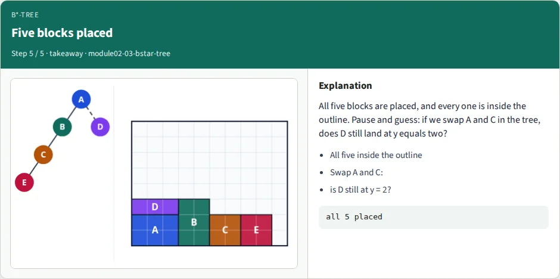
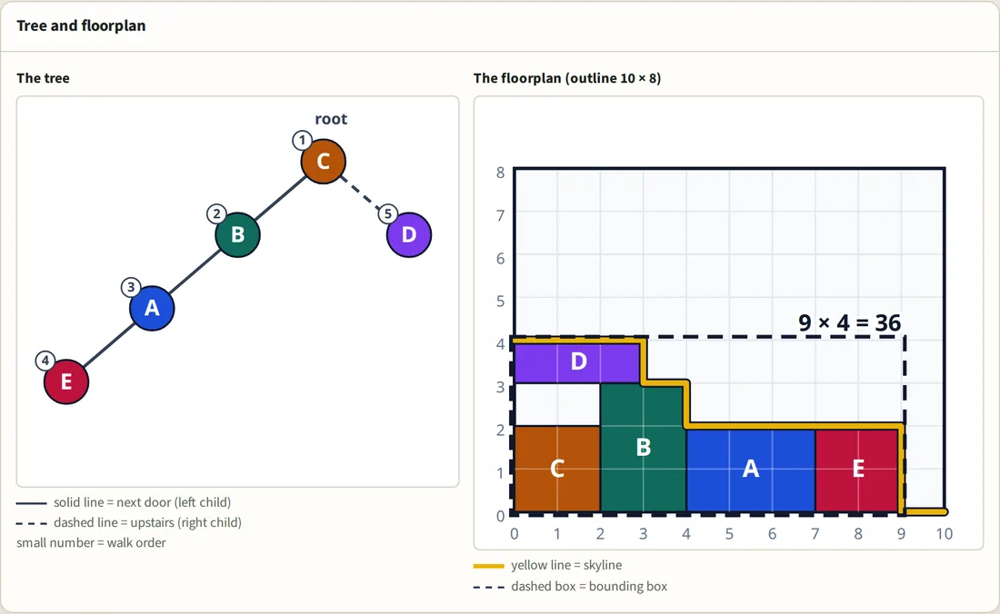

Lab 05 · Representations
B*-tree floorplan
A floorplan with five blocks can be written as a tree. This lab builds the picture from the tree (left child next door, right child upstairs, each block dropping onto the skyline), scores it with its bounding box, and changes it by swapping two names, turning a block or moving a leaf. Simulated annealing, in a later lab, does exactly these changes thousands of times.
Five short parts: the next one starts by itself. Pick a part below, or a speed; it applies to every part. Each part also has an interactive lesson: use its link below the part.
Slides
All 32 slides of the video. Click one to open it full size, or download the whole deck.


Walkthrough
The five frames of the video that place the golden tree block by block, with the caption of each step.

- Next door to A
- x = 0 + 3 = 3
- On the floor: y = 0


- Place a node
- then everything down its left side
- only then its right child


- C at x = 5
- E at x = 7
- 3 + 2 + 2 = 7


- D: A's right child
- Upstairs: x = 0
- On top of A: y = 2


- All five inside the outline
- Swap A and C:
- is D still at y = 2?
Interactive lab

Build the floorplans yourself, right in the browser:
- Choose each block's parent and side (next door or upstairs), then press Pack and watch the blocks drop onto the skyline.
- Swap two names, turn a block, move a leaf, and see the bounding box, the wasted squares and whether the floorplan is legal.
- Load five ready-made trees (the golden tree, A and C swapped, the walk-order tree, the long row, a bad tree of 40).
- Guess where D will land before you pack, and compare.
Nine challenges, from Intro to Stretch, check the tree you built, not the button you pressed. A change after Pack needs a new Pack, and the study reveal never counts.
Implement (Track A)
Write the packer and its helpers yourself (pack, bounding box, legal, swap, rotate, move a leaf) and check them against the goldens. The commands below run inside the course repository, from courses/learn_floorplanning/module02-03-bstar-tree/.
tiny_modules.jsonThe five blocks and the 10 × 8 outline
golden.jsonGolden tree: D sits exactly on A
lift.jsonA and C swapped: B lifts D and leaves a hole
order.jsonWalk order: E is placed before D
floor.jsonA left child falls to the floor
swap.jsonBad tree (40): one swap gives 27
rotate.jsonLong row: one turn makes it fit
move.jsonLeaf move: 40 becomes 28
best.jsonThe tightest floorplans: 6 × 4 = 24
bstar_check.pyGolden self-check; --impl checks your code
Examples — B*-tree
Track A (implement). The five blocks are in examples/tiny_modules.json, the example trees are in examples/*.json,
and the answer key is examples/bstar_check.py.
Every number below was printed by that checker (python3 examples/bstar_check.py --show, --json).
Run it from this module folder; it needs only the Python standard library.
Goal
A floorplan with five blocks can be written as a binary tree. Build the picture from the tree (pack), score it (bounding box, legal), and change the picture by changing the tree (swap, rotate, move). Simulated annealing (a later lab) does exactly these three changes thousands of times.
Definitions
- Block: a rectangle with a name, a width
wand a heighth. Sizes are writtenw x h: "3 x 2" is 3 wide, 2 high. The five blocks: A 3x2, B 2x3, C 2x2, D 3x1, E 2x2. Their areas add up to 23. - Outline: the fixed box the blocks must stay in. Here 10 x 8 (area 80). The origin is the lower-left corner and y grows upward.
- Tree: every block appears exactly once. A node has an optional left child and an optional right child.
Text form:
id(left,right),-for an empty child, a bare id for a leaf.A(B(C(E,-),-),D)is the golden tree: A's left child is B, B's left child is C, C's left child is E, and A's right child is D. - Left child = next door: it starts at the right edge of its parent. Right child = upstairs: it starts at the same left edge as its parent. The names are the opposite of what you might guess, so say "next door" and "upstairs".
- Skyline (also called the contour): for every x, the top edge of what is already placed (0 where nothing is).
Placing a block raises the skyline to
y + hover the block's footprint[x, x + w). - Legal: every block is inside the outline and no two blocks overlap (touching edges is allowed).
- Bounding box: the smallest rectangle around all blocks: width = largest
x + w, height = largesty + h. Score = bounding-box area. Wasted squares = bounding-box area − 23. - Two different deadspaces: the outline deadspace is
80 − 23 = 57and never changes with the tree. The bounding-box deadspace (wasted squares) is what a tree changes: 4 for the golden tree.
API (what --impl looks for)
A tree is a nested dict: {"id": "A", "left": {...}, "right": {...}}, a missing child is a missing key.
modules is a list of {"id", "w", "h"}, outline is {"w", "h"}. A pack is {id: {"x", "y", "w", "h"}}.
pack_bstar(tree, modules) # the pack, by the rule below
bounding_box(pack) # (width, height)
is_legal(pack, outline) # inside the outline and no overlap
swap(tree, a, b) # NEW tree, names a and b exchanged, shape unchanged
rotate(modules, id) # NEW module list, that block's w and h exchanged
move_leaf(tree, leaf, parent, side) # NEW tree, leaf cut and hung on parent's free "left" or "right" slot
Never change the tree or the list you receive: return a new one. move_leaf raises an error if the node is not a
leaf, is the root, or the slot is taken. Functions you have not written yet are reported as SKIP.
The rule (exact)
walk(node, x): # PREORDER
y = highest skyline value over [x, x + node.w)
place node at (x, y)
raise the skyline to y + node.h over [x, x + node.w)
walk(node.left, x + node.w) # the WHOLE left subtree first (next door)
walk(node.right, x) # then the right child (upstairs)
walk(root, 0)
- A block falls until it touches the highest thing under its footprint, so
yis never typed by hand. - For a right child
y >= parent.y + parent.h(it is at least on top of its parent). It is strictly more when a taller neighbour sticks out under it: see lift. - A left child's
yis not its parent'sy: it falls to whatever is under it, down to 0: see floor. - The order matters. Placing the right child first changes the pack of 1764 of the 5040 trees: see order.
Operations
swap(tree, a, b) exchange the two names; who is whose left or right child does not change
rotate(modules, id) w, h = h, w for that block; the tree does not change
move_leaf(tree, leaf, p, side) cut the leaf off its parent, hang it on p.side (that slot must be free)
Golden tables
The example trees (examples/*.json)
| Example | Tree | Positions (x,y) | Box | Area | Wasted | Legal | Why |
|---|---|---|---|---|---|---|---|
| golden | A(B(C(E,-),-),D) |
A(0,0) B(3,0) C(5,0) D(0,2) E(7,0) | 9x3 | 27 | 4 | yes | D sits exactly on A: D.y = A.y + A.h = 2 |
| lift | C(B(A(E,-),-),D) |
A(4,0) B(2,0) C(0,0) D(0,3) E(7,0) | 9x4 | 36 | 13 | yes | the golden with A and C swapped: B is 3 high and sticks out under D, so D lands at 3, not 2, and leaves a hole of 2 squares |
| order | A(B(C(-,E),D),-) |
A(0,0) B(3,0) C(5,0) D(3,4) E(5,2) | 7x5 | 35 | 12 | yes | E is placed before D and lifts it to 4. Right child first gives a 7x8 box |
| floor | A(B(C(-,D(E,-)),-),-), A turned |
A(0,0) B(2,0) C(4,0) D(4,2) E(7,0) | 9x3 | 27 | 4 | yes | E is D's left child but falls to y = 0: nothing is under it |
| swap, start | A(B(C(D,-),-),E) |
A(0,0) B(3,0) C(5,0) D(7,0) E(0,2) | 10x4 | 40 | 17 | yes | a bad tree for the same five blocks |
swap, after swap(D,E) |
A(B(C(E,-),-),D) |
the golden | 9x3 | 27 | 4 | yes | one swap removes 13 wasted squares |
| rotate, start | A(B(C(D(E,-),-),-),-) |
A(0,0) B(3,0) C(5,0) D(7,0) E(10,0) | 12x3 | 36 | 13 | no | every block is a left child: 3+2+2+3+2 = 12 > 10, E sticks out |
rotate, after rotate(D) |
same tree, D is 1x3 | D(7,0) E(8,0) | 10x3 | 30 | 7 | yes | 3+2+2+1+2 = 10: the row fits |
| move, start | A(B(C(D,-),-),E) |
as "swap, start" | 10x4 | 40 | 17 | yes | |
move, after move_leaf(D,B,right) |
A(B(C,D),E) |
A(0,0) B(3,0) C(5,0) D(3,3) E(0,2) | 7x4 | 28 | 5 | yes | D now sits upstairs of B |
| best | A(D,C(E(B,-),-)) |
A(0,0) B(4,1) C(0,2) D(3,0) E(2,2) | 6x4 | 24 | 1 | yes | B is lifted onto D: only the skyline can give B y = 1 |
The lift example is the golden tree with A and C swapped (derived_from in lift.json).
Step by step: the golden tree
| Step | Block | From | At (x,y) | Held up by | Skyline after | Box after |
|---|---|---|---|---|---|---|
| 1 | A | root | (0,0) | floor | [0,3)=2 |
3x2 |
| 2 | B | left of A | (3,0) | floor | [0,3)=2 [3,5)=3 |
5x3 |
| 3 | C | left of B | (5,0) | floor | [0,3)=2 [3,5)=3 [5,7)=2 |
7x3 |
| 4 | E | left of C | (7,0) | floor | [0,3)=2 [3,5)=3 [5,9)=2 |
9x3 |
| 5 | D | right of A | (0,2) | A | [0,5)=3 [5,9)=2 |
9x3 |
python3 examples/bstar_check.py --show prints this walk for every example, and --json prints it as data
(trees, packs, bounding boxes and the skyline after each placement).
All 5040 trees on A to E
| Quantity | Value |
|---|---|
| labelled trees (Catalan(5) x 5!) | 5040 |
| legal in the 10x8 outline | 4680 |
| overlapping | 0 (a B*-tree cannot overlap by construction) |
| illegal because too wide / too tall | 120 / 240 (each illegal tree sticks out, nothing else) |
| smallest bounding-box area | 24 (6x4), reached by 8 trees; 23 is impossible (23 is prime and B is 3 high) |
| legal trees with a box smaller than the golden 27 | 216 |
| pack changes if the right child is placed first | 1764 |
| pack changes if y is read from the parent instead of the skyline | 2714 |
| a right child lifted above its parent's top edge | 360 |
| a left child lifted above its parent's y | 254 |
The 8 trees with area 24 (examples/best.json):
A(D,C(E(B,-),-)), A(D,E(C(B,-),-)), B(C(E,-),D(A,-)), B(E(C,-),D(A,-)), C(E(B,-),A(D,-)),
D(A,B(C(E,-),-)), D(A,B(E(C,-),-)), E(C(B,-),A(D,-)). Each wastes 1 square.
One operation at a time
| Tree | Best area after one swap (of 10) | Best after one turn (of 5) | Best after one leaf move (of 8) |
|---|---|---|---|
| golden (27) | 27 (4 swaps keep 27) | 27 (2 keep 27) | 27 (1 keeps 27) |
| swap start (40) | 27, only swap(D,E) |
32 | 28 (two moves: D to B.right, D to E.left) |
So no single operation improves the golden tree, and from the swap start the swap of D and E is the only way to 27. For the all-left chain, 12 of the 32 sets of turned blocks are legal; D is the only single block whose turn makes it legal.
Try these
python3 examples/bstar_check.py # reference: all PASS
python3 examples/bstar_check.py --show # every pack, step by step
python3 examples/bstar_check.py --vs-node # same packs as the browser lab's JS, all 5040 trees
python3 examples/bstar_check.py --impl my_bstar.py # check YOUR functions
python3 examples/bstar_check.py --impl examples/wrong/right_first.py # a deliberately wrong one
python3 examples/bstar_check.py --impl examples/wrong/no_contour.py # another one
python3 examples/bstar_check.py --json > bstar.json # trees, packs, skylines as data
examples/wrong/ holds two packers with exactly one bug each: the right child placed before the left subtree, and
no skyline (y read from the parent). Both pack the golden tree correctly, so the golden check alone cannot catch
them. Run them and read which lines FAIL. The "all 5040 trees" line catches both.
Starter prompts (ask "why")
- Implement
pack_bstarand print the step table of the golden tree. Which block holds D up, and why isD.yequal to 2? - In
lift, D lands at y = 3, not 2. Which block lifts it? How many squares does the hole above C hold? - In
order, why does D end at y = 4? Place D before the left subtree by hand and say which box you get. - In
floor, E is a left child of D but sits at y = 0. Explain in one sentence why "left child" does not mean "same row". - From the swap start, try all ten swaps and report each area. Why does only one reach 27?
- In the chain, turn each of the five blocks in turn. Which single turn makes it legal, and why do the other four not help?
- Run
--impl examples/wrong/no_contour.py. Which examples does it get right, and what do they have in common?
Expected artifacts
- A
my_bstar.pythat prints no FAIL againstbstar_check.py. - The step table of one example, with the skyline after each placement.
- Two sentences: one on why the walk order matters, one on why the skyline matters (use
orderandlift).
Stretch
- Beat the golden: find a legal tree with a box smaller than 27 (216 exist) without looking at
best.json. - Reach 24 without turning any block. How many of the 5040 trees do it? Which one block must be lifted onto another?
- Write
move_leafso it also accepts moving a leaf to the other side of its own parent, and list all 8 leaf moves of the swap start with their areas.
Quiz
8 quick questions on this lab. Pick an answer for each, then check.
Full narration transcript
B*-tree floorplan representation
Five blocks, one frame, and a tree that says where each block goes. Can you build the picture from the tree alone? By the end, you will, and you will find the tightest picture of all.
Five blocks
A chip is made of large rectangular parts, called blocks. Ours has five blocks, named A to E. They are drawn on squared paper, so you can count each width and height.
The outline
A floorplan says where each block sits on the chip. Every block must stay inside a frame called the outline. Our outline is ten squares wide and eight squares tall. The tighter the blocks are packed, the smaller the chip can be.
A tree as a recipe
Writing down every position is slow, so we use a recipe instead: a B-star tree. Each block is one node of the tree. The top node, A, is called the root. Each node can have two children: a left child and a right child.
The root goes in the corner
The root goes in the lower-left corner of the outline. From that corner, x counts squares to the right, and y counts squares up.
Left is next door, right is upstairs
A left child goes next door, right against its parent's right side. A right child goes upstairs, on top of its parent, with the same left edge. The names sound backwards, so remember: left means next door, right means upstairs. In the tree, a solid line means next door, and a dashed line means upstairs.
Where does B go?
A is three squares wide and two squares tall. B is A's left child. Pause and guess: where does B's left edge go?
B goes next door, at x = 3
B goes next door, at x equals three: A starts at zero, and A is three wide. Nothing is under B, so it rests on the floor, at y equals zero.
The walk: A, B, C, E, then D
We place the blocks one at a time, in a fixed walk order. Place a node, then everything down its left side, and only then its right child. So the walk goes A, B, C and E, and D comes last.
C and E go next door
C is B's left child, so it goes next door to B, at x equals five. E is C's left child, so it lands next door to C, at x equals seven. The widths simply add up: three, plus two, plus two, makes seven.
D goes upstairs, on A
The left side is done, so the walk comes back to D, A's right child. D goes upstairs, so it starts at x equals zero, like A. It sits on top of A, at y equals two.
Five blocks placed
All five blocks are placed, and every one is inside the outline. Pause and guess: if we swap A and C in the tree, does D still land at y equals two?
Swap A and C
No: D lands one square higher. Here is the tree with A and C swapped: C is the root, and A takes C's old place. C, B, A and E still go next door, one after the other.
The skyline
Now picture the blocks as a city, seen from far away. The top edge of everything placed so far is the skyline. A new block drops from the sky, like a Tetris piece, until it touches the skyline.
D lands on B
D is three wide, so it hangs over C and over part of B. B is three tall, so it stops D at y equals three. That leaves a hole of two empty squares above C.
The bounding box
So which floorplan is better? To compare, we draw the bounding box: the smallest rectangle around all the blocks. For the first tree, it is nine wide and three tall: twenty-seven squares.
Wasted space
The five blocks cover twenty-three squares. The other four squares in the box are empty: that is wasted space. Fewer wasted squares means a tighter floorplan.
One swap, a worse score
The swapped tree needs a box nine by four: thirty-six squares, with thirteen wasted. So one swap of two names changed the picture and the score. Twenty-seven became thirty-six: the first tree is better.
One long row
Now take a tree where every child is a left child. Pause and guess: will this long row fit inside the outline?
Every block next door
No, it will not fit. Every block goes next door: three, two, two and three make ten. The outline is already full, and E is still waiting.
Sticking out
E lands at x equals ten, so the row is twelve squares wide. E sticks out of the outline by two squares. A floorplan is legal only when every block is inside the outline. So this row is not legal.
Never an overlap
Notice that the blocks never overlap. Each block drops onto the skyline, so it can never land inside another one. With a B-star tree, sticking out is the only way to fail.
Turn one block
We can turn a block on its side, so its width and height swap. Turn D, and it becomes one wide and three tall. Now the row is ten wide, so it fits exactly, and it is legal again.
Three small changes
Turning is one of three small changes. You can also swap two names in the tree, as we did with A and C. Or move a leaf, a block with no children, to a free spot in the tree. Each change gives a new floorplan, with a new score. Pause and guess: can any tree beat twenty-seven squares, and what is the smallest box?
The tightest floorplan
Yes: many trees beat twenty-seven, and the best need only twenty-four squares. Here is one of the best trees. Its walk places A, D, C and E, and B comes last.
B is lifted by the skyline
Under B, the skyline is the top of D, so B lands at y equals one. It fills the gap, and the box is six wide and four tall: twenty-four squares. Only one square is wasted.
Why not twenty-three?
Could a box of twenty-three squares, with nothing wasted, hold all five blocks? Twenty-three squares only make a rectangle one square thick. Block B is too thick for that, so twenty-four is the best possible.
Browser lab track
Now build floorplans yourself. In the browser lab, you edit the tree and watch each block drop onto the skyline. The challenges check the tree you built. Lift D higher, make the long row fit, and reach twenty-four.
Implement track
If you like programming, write the packer in Python. The examples file gives the exact rules. Run the checker once to print every correct answer, then run it on your own file. It compares your packer with the right one on all five thousand and forty trees.
Remember
Left child: next door. Right child: upstairs, with the same left edge. Walk the tree: the node, its whole left side, then its right child. Each block drops until it touches the skyline. Score a floorplan with its bounding box, and count the wasted squares. A tree never overlaps, but it can stick out, so check the outline.
Your turn
Pick a track: the browser lab, Python, or both. Tick each box of the checklist, then take the short quiz. Next comes the sequence pair: two lists of names instead of a tree. Pause and guess: can two lists describe our best floorplan, with twenty-four squares? Yes: two lists are enough. That's the sequence pair, in the next lab.